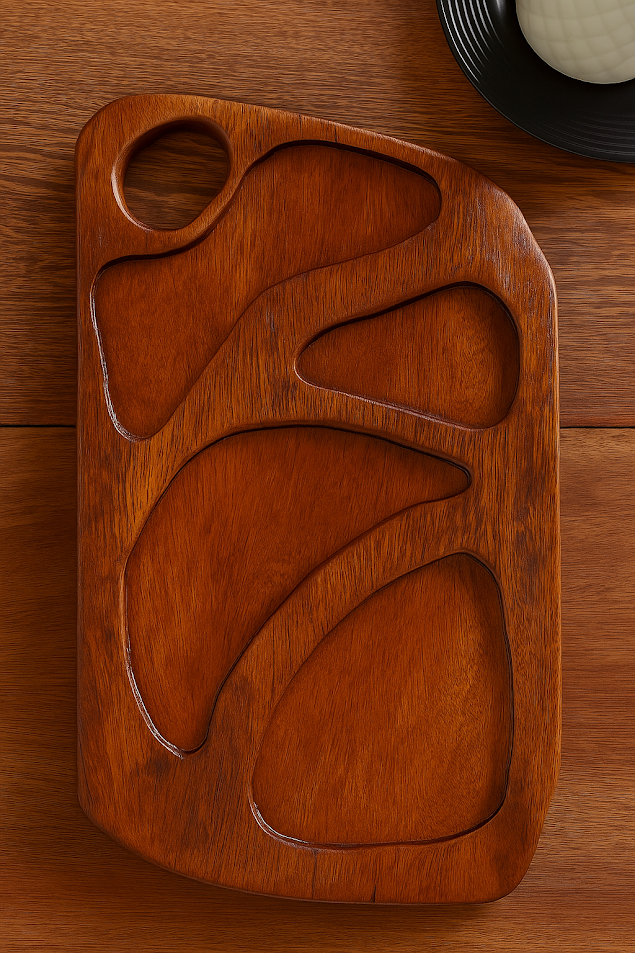
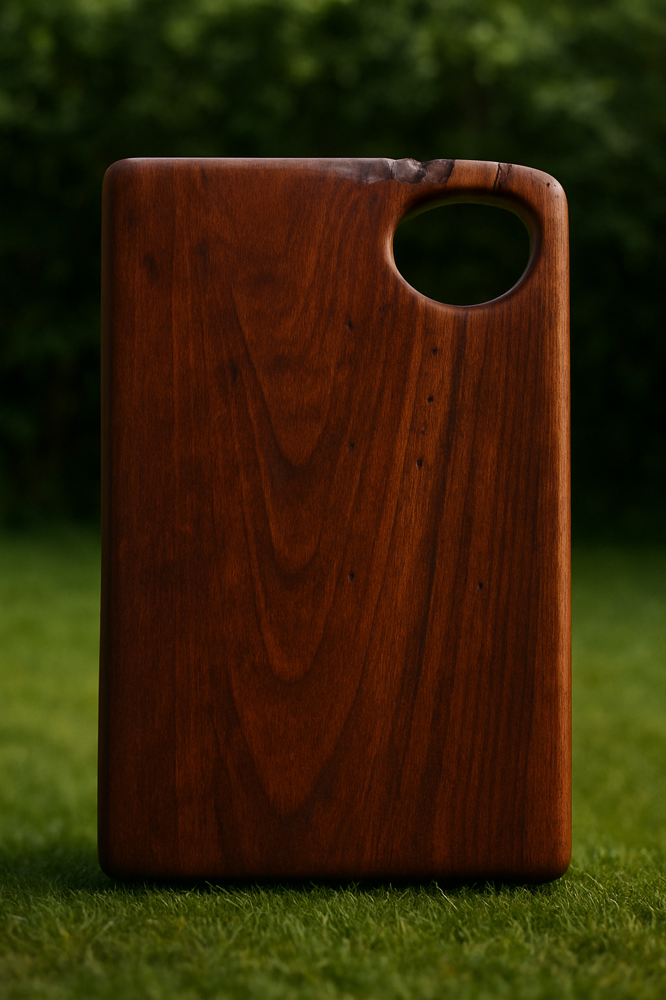
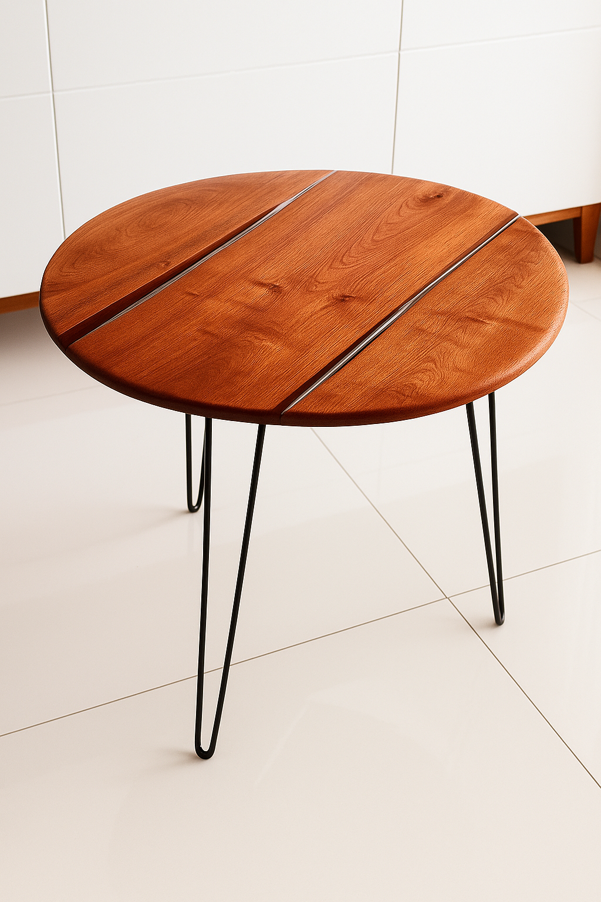

Oferta por tempo limitado
Somente 20 unidades com desconto! Garanta já a sua.
QUERO MINHA TÁBUA COM DESCONTOPor que escolher a Lenho Mestre?
üå± Madeira Nobre e Sustentável: reaproveitamento com consci√™ncia ecol√≥gica.
üñê Feitas √† Mão: cada pe√ßa √© √∫nica e feita com aten√ß√£o total aos detalhes.
üçΩ Design Funcional: ideais para servir ou decorar sua cozinha.
Sobre o Artesão
Lenho Mestre é um projeto de artesanato que valoriza a madeira nobre e sustentável, criando peças únicas e funcionais. Cada tábua é feita à mão com amor e dedicação, garantindo qualidade e exclusividade.
Nossas Peças em Destaque

Petisqueira
De R$350 por R$247

Tábua de Corte
De R$150 por R$97,50

Centro de Mesa
De R$750 por R$450

Tábua de Corte
De R$220 por R$132
 FALE COM O ARTESÃO
FALE COM O ARTESÃO